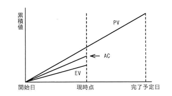

EVMで管理しているプロジェクトがある。図は，プロジェクトの開始から完了予定までの期間の半分が経過した時点での状況である。コスト効率，スケジュール効率がこのままで推移すると仮定した場合の見通しのうち，適切なものはどれか。
【グラフ】（横軸：時間（開始日〜現時点〜完了予定日）、縦軸：累積値）
つまり、現時点で EV ＜ AC ＜ PV という関係になっている。
ア 計画に比べてコストは多くなり，プロジェクトの完了は遅くなる。
イ 計画に比べてコストは多くなり，プロジェクトの完了は早くなる。
ウ 計画に比べてコストは少なくなり，プロジェクトの完了は遅くなる。
エ 計画に比べてコストは少なくなり，プロジェクトの完了は早くなる。

ア：計画に比べてコストは多くなり，プロジェクトの完了は遅くなる。
| 選択肢 | 内容 | 補足 |
|---|---|---|
| ア | コストは多くなり，完了は遅くなる | 正解。図よりEV＜AC（出来高より実コストが大きい）であるためコスト効率指数CPI＝EV／AC＜1となり、このまま推移すると計画よりコストが多くかかる。また、EV＜PV（出来高が計画値より少ない）であるためスケジュール効率指数SPI＝EV／PV＜1となり、計画よりスケジュールが遅れている。bash_toolによる指標計算でもCPI<1・SPI<1の両方が確認された |
| イ | コストは多くなり，完了は早くなる | コストが多くなる点はEV＜ACから正しく導けるが、EV＜PVによりスケジュールは遅れている（SPI<1）ため、「完了が早くなる」という結論は図の状況と矛盾する |
| ウ | コストは少なくなり，完了は遅くなる | スケジュールが遅れる点はEV＜PVから正しく導けるが、EV＜ACによりコストは少なくなるのではなく多くなる（CPI<1）ため、「コストは少なくなる」という結論は図の状況と矛盾する |
| エ | コストは少なくなり，完了は早くなる | EV＜AC・EV＜PVのいずれの関係からも、コストの増加・スケジュールの遅延が読み取れるため、両方とも図の状況と矛盾する |
出典：2024年度 春期 応用情報技術者試験 午前 問51（IPA）